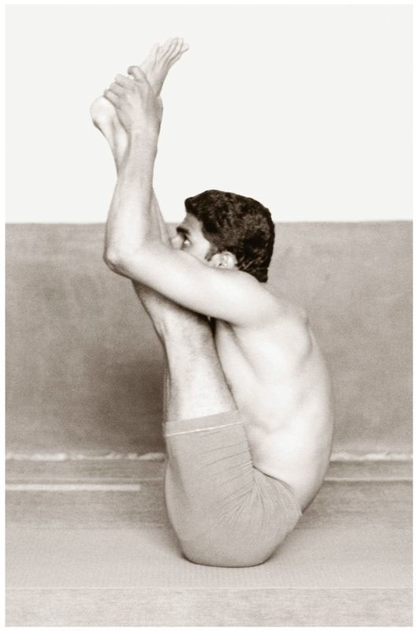

Supta Padangushtasana is a two-part asana, the first part consisting of twenty vinyasas, and the second of twenty-eight. The 9th and 13th vinyasas constitute the states of the first part, and the 11th and 19th vinyasas, the states of the second. While in the states of this asana, aspirants must be mindful to practice the breathing methods with attention. As this is an asana unlike previous ones, I feel prompted to repeat this.
METHOD FOR (PART 1)
First, lie down on the back, as in the preparations for Sarvangasana [asana 32], doing rechaka and puraka; this is the 7th vinyasa. Then, doing puraka, bring the straightened right leg up toward the head, straighten the left leg, strongly take hold of the big toe of the right leg with the right hand, press the left hand firmly on the left thigh, and lie flat, keeping the head on the floor; this is the 8th vinyasa. Then, doing rechaka, lift only the head a little, touch the nose to the straightened right knee, and do puraka and rechaka as much as possible; this is the 9th vinyasa. Next, doing puraka, lower the head to the floor; this is the 10th vinyasa. Next, doing rechaka, lower the right leg to the floor and join the legs together; this is the 11th vinyasa. Repeat the above for the left leg. Then, come into the position of Halasana [asana 33], press the hands to the floor by the ears, and roll the whole body back over the head, coming into the position of the 4th vinyasa. This is called Chakrasana. The next vinyasas follow those of the previous asanas. This is the first part.
METHOD FOR (PART 2)
Perform the first ten vinyasas of Part 1. Then, doing rechaka, bring the right leg out to the right and lower it to the floor and do rechaka and puraka as much as possible; this is the 11th vinyasa. Then, doing puraka , raise the right leg, and return to the 8th vinyasa of Part 1; this is the 12th vinyasa. Next, doing rechaka, touch the nose to the knee; this is the 13th vinyasa. Then, doing puraka, lower the head to the floor; this is the 14th vinyasa. Then, the next vinyasas repeat the above for the left side. Indeed, whatever the asana, one should practice first on the right side and then on the left side. This is the second part of Supta Padangushtasana, both parts of which are very important.
URDHVA MUKHA PASCHIMATTANASANA

BENEFITS
Supta Padangushtasana purifies and strengthens the waist region, knees, food and anal channels, and the sperm passageway (virya nala). It dissolves the bad fat on the sides of the body and the waist, making the waist slender and strong, and the body light. Supta Padangushtasana can be done by all and sundry, except pregnant women.